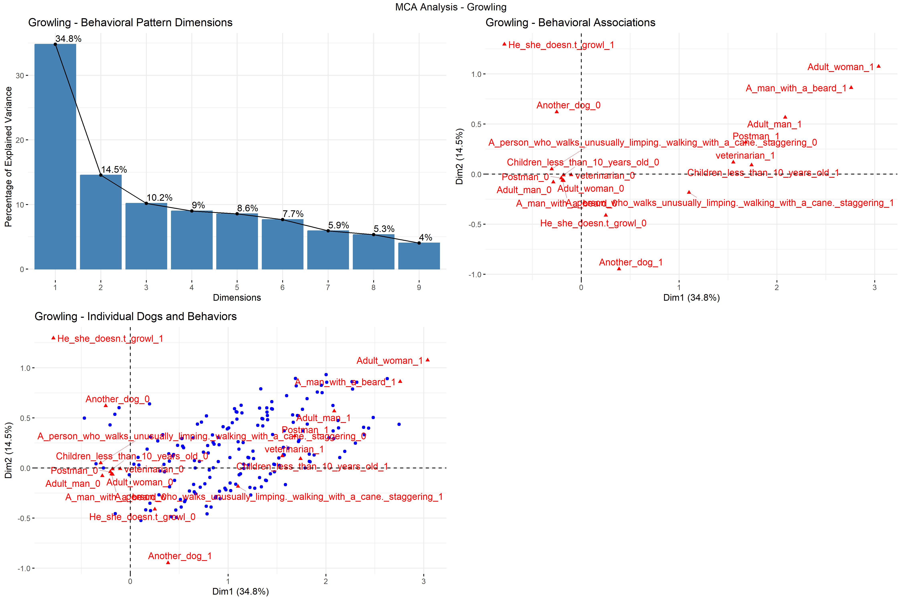
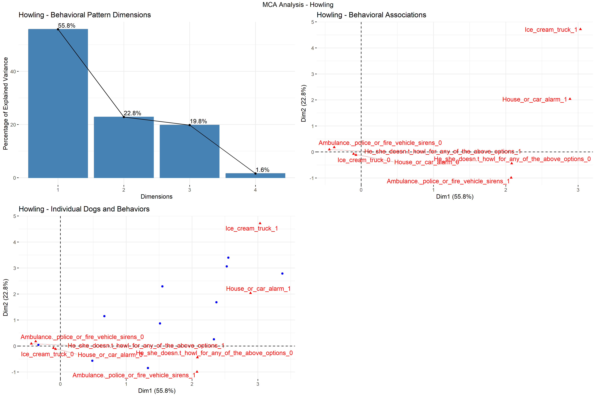
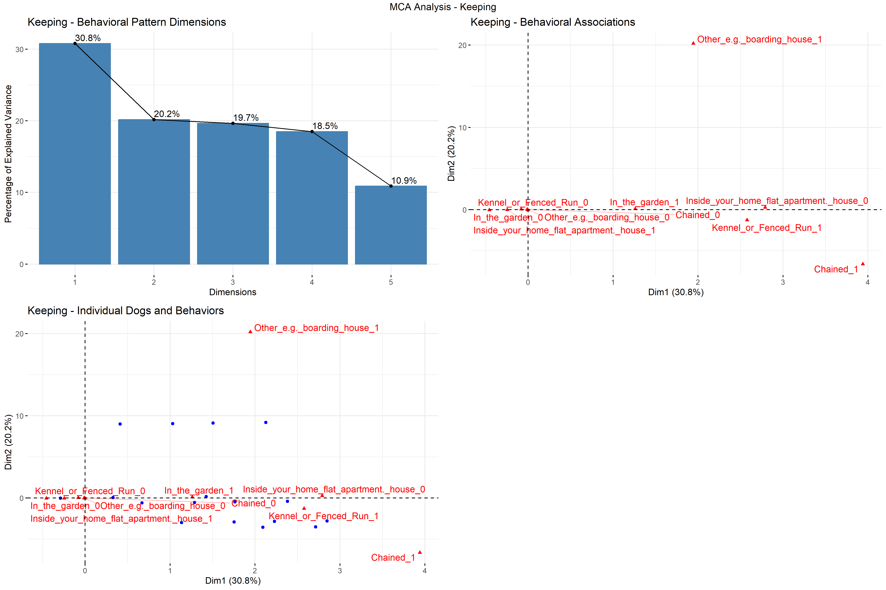
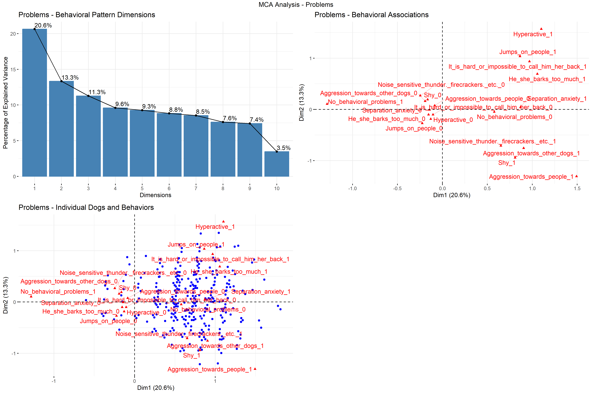

Analysis of growling behavior reveals patterns in how dogs direct their growling responses to different targets.
Analysis of howling responses to different stimuli shows patterns in sound-triggered vocalizations.
Analysis of keeping conditions reveals patterns in how different living environments relate to each other.
Analysis of behavioral problems shows patterns in how different issues tend to co-occur.
